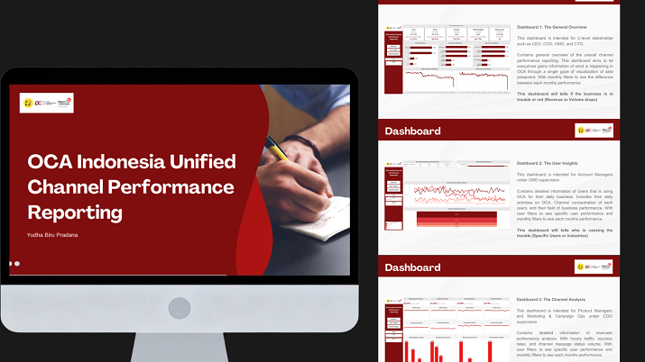

Projects
OCA Indonesia Unified Channel Performance Reporting

Project Summary
OCA Indonesia, a subsidiary of Telkom Indonesia, provides Communication Platform-as-a-Service solutions. Its core product, OCA Blast, enables enterprises to manage mass messaging workflows across Whatsapp, SMS, Email, and Call channels. Revenue is driven by billable messages. Separate monitoring of each channel created difficulties in holistically understanding cross-channel performance and user behavior.
The methodology involved problem definition, exploratory data analysis, dashboard visualization, and insight generation. Using SQL BigQuery and Tableau, tabular data spanning five tables and 12 columns—including transaction records, user details, and delivery statuses—was analyzed to track success rates, volume trends, daily trendlines, concentration scores, and peak hourly traffic.
Analysis revealed monthly revenue declines, heavy volume concentration across three top users, and high revenue efficiency for SMS despite a lower message volume. Recommendations advise deploying Account Managers for client maintenance and top-user VIP treatment, xecuting user education on SMS benefits, and launching targeted marketing campaigns for online storefronts to capture the underutilized E-Commerce market.
Scope Of Work / Achievement
- Engineered a centralized SQL BigQuery pipeline to clean and merge 5 relational tables, eliminating siloed monitoring across disparate communication channels.
- Built an interactive Tableau dashboard tracking Delivery Success, Concentration Scores, and Hourly Traffic to provide leadership with automated operational visibility.
- Uncovered a monthly revenue decline and severe client dependency, identifying that 3 enterprise users dominated total volume while a profitable E-commerce market segment was untapped.
- Delivered actionable CRM strategy proposing "VIP Treatment" retention workflows for high-value accounts and targeted marketing campaigns to capture the E-commerce sector.
Recommendations
- Stopping downward slides of transaction volume and revenue by assigning Account Managers to do maintenance on the users.
- Assigned a dedicated Account Managers to top three users and give them a ‘VIP Treatment’ to ensure they remain using OCAServices
- Used the top three users as a benchmark of success. Marketing and Campaign Ops could pitch OCA services to other companies in the same business field to find new big clients
Tools and Method
Tools : SQL, Tableau
Method : Delivery Success Rate, Daily and Hourly Trendlines